#Import packages
import numpy as np
import skimage as ski
import matplotlib.pyplot as plt
import imageio.v3 as iio
from matplotlib.colors import LinearSegmentedColormap
import pandas as pdPython for Bio Image Analysis
Getting Started with Image Data in Python
Let’s start off by importing the packages we are going to use for todays session.
We can use Python to assign values to variables and perform basic arithmetic.
Let’s create two variables representative of 8 bit pixels. These have a max range in values of 0 (black)- 255 (white).
In microscopy images, each pixel stores an intensity value like this, representing how bright that point is.
#Assign the value 50 to pixel_dark
pixel_dark = 50
print(f"Dark Pixel Value = {pixel_dark}")
#Assign the value 200 to pixel_light
pixel_light = 200
print(f"Light Pixel Value = {pixel_light}")Dark Pixel Value = 50
Light Pixel Value = 200Let’s mathematically manipulate our variable to change the dark pixel value.
#Scale brightness and assign it to new variable
pixel_scaled_dark = pixel_dark*2
#Print the result to the console
print(f"Dark Pixel Value = {pixel_dark}, Scaled Dark Pixel Value = {pixel_scaled_dark}")
#Normalise the pixel value into a 0-1 scale and assign it to a new variable
pixel_dark_normalised = pixel_dark/255
print(f"Dark Pixel Value = {pixel_dark}, Normalised Dark Pixel Value = {pixel_dark_normalised}")Dark Pixel Value = 50, Scaled Dark Pixel Value = 100
Dark Pixel Value = 50, Normalised Dark Pixel Value = 0.19607843137254902 Challenge- can you compute the contrast (the difference) between pixel_light and pixel_dark?
Creating 2D arrays of pixels and visualising them
So far, we have been working with single pixel values. However, real images are made up of many pixels arranged in a grid (rows and columns). In Python, we can represent this grid as a 2D array.
Let’s create a simple image using our pixel_light and pixel_dark values in a checkerboard like pattern.
# Create a 2D checkerboard pattern using pixel_dark and pixel_light
image = np.array([
[pixel_dark, pixel_light, pixel_dark, pixel_light], #row 1
[pixel_light, pixel_dark, pixel_light, pixel_dark ], #row 2
[pixel_dark, pixel_light, pixel_dark, pixel_light], #row 3
[pixel_light, pixel_dark, pixel_light, pixel_dark ] #row 4
])
#Inspect the shape of the array
print(f"Image shape = {image.shape}")
# Display the array values
print(f"Image Pixel Values = {image}")Image shape = (4, 4)
Image Pixel Values = [[ 50 200 50 200]
[200 50 200 50]
[ 50 200 50 200]
[200 50 200 50]]Now we have created our 2D array, let’s display it as an image using matplotlib.
# Visualise the image
# fig = the whole canvas (the page), ax = the plotting area where your image is drawn
fig, ax = plt.subplots()
# Render the 2D array as an image in the axes using a grayscale colormap
# 0 = black, 255 = white
im = ax.imshow(image, cmap='gray', vmin=0, vmax=255)
# Set a title for the image
ax.set_title("Checkerboard Pattern")
# Add a colour bar showing how pixel intensity values map to brightness
fig.colorbar(im, ax=ax, label="Pixel Intensity")
# Display the figure
plt.show()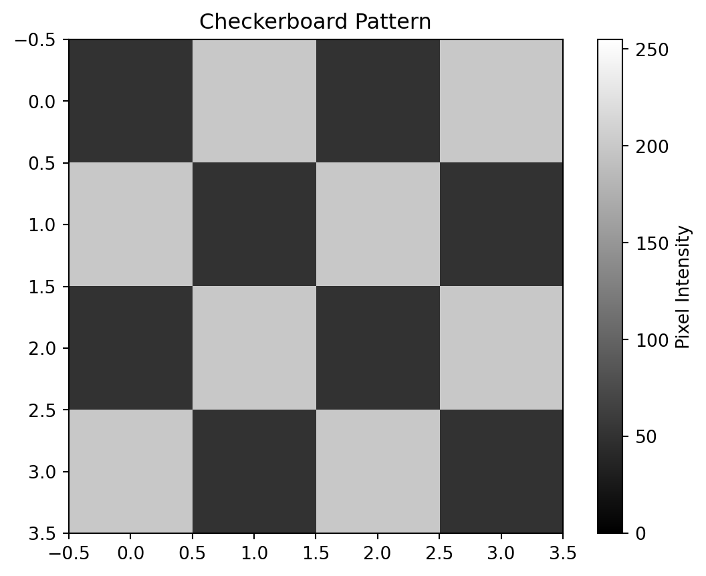
Now we have created our image, we can mathematically manipulate the whole array. Let’s create the inverse of our image.
#Invert the image
image_inv = 255 - image
#Visualise the inverted image
fig, ax = plt.subplots()
im = ax.imshow(image_inv, cmap='gray', vmin=0, vmax=255)
ax.set_title("Inverted Checkerboard Pattern")
fig.colorbar(im, ax=ax, label="Pixel Intensity")
plt.show()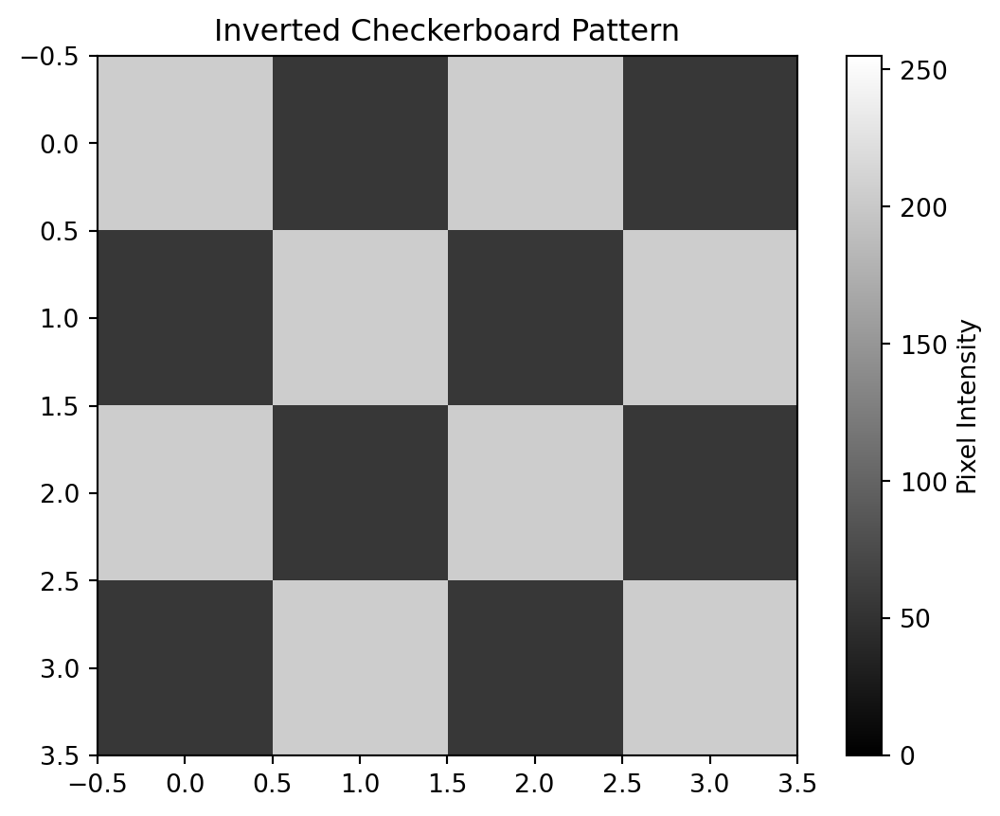
In this example, the operation being performed (image inversion) is quite straightforward: each pixel value is subtracted from 255. However, as image-processing tasks become more complex, some operations may require multiple steps and longer blocks of code. In addition, the same operation (such as inversion) may need to be applied multiple times within an analysis pipeline.
To avoid repeating and copying code, we can encapsulate these operations within functions. Let’s create a function for our simple image inversion operation.
def invert_image(image):
"""
Invert an 8-bit grayscale image.
Parameters:
image (numpy array): Input image with values 0–255
Returns:
numpy array: Inverted image
"""
return 255 - imageChallenge- can you use your newly defined function to invert the checkerboard image again?
Displaying Single Channel Biological Images
So far, we have been working with simple arrays that we created ourselves in Python. Now, let’s move on to working with real biological image data.
In this example, we will import super-resolution fluorescence microscopy data of human colon sections.
This dataset is known as a multiplexed image. Here, multiple fluorescent channels have been acquired, producing several 16-bit images that are stored together in a single .tif file.
However, to start with, let’s import a version of the .tif file that has just one of these fluorescent channels. This fluorescent channel shows E-Cadherin, a protein present in epithelial cell membranes.
# Load the image
ecad_image = iio.imread(uri="data/colonic_crypt_ecad.tif")
#Inspect the shape and structure of the image
print(ecad_image.shape)
#Display the image
fig, ax = plt.subplots()
ax.imshow(ecad_image)(2024, 2024)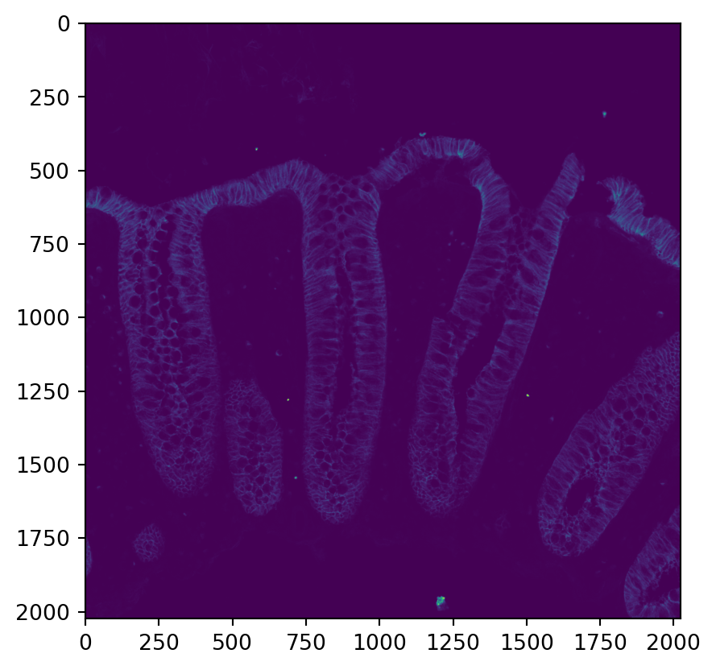
This loads and displays the image. As it is single-channel (grayscale), matplotlib applies a default colormap (viridis) to visualise intensity values.
However, fluorescence images represent signal intensity from a single fluorophore channel, which is typically displayed using a single colour. The default colormap is therefore not ideal for interpretation.
Let’s instead map the image to red to better represent a single fluorescence channel. LinearSegmentedColormap.from_list() lets us define this custom mapping by simply providing two anchor colours (in this case black and red) and it interpolates smoothly between them across the full intensity range.
#Create the colour scale
black_red = LinearSegmentedColormap.from_list(
"black_red", ["black", "red"]
)
#Display the image
fig, ax = plt.subplots()
ax.imshow(ecad_image , cmap=black_red)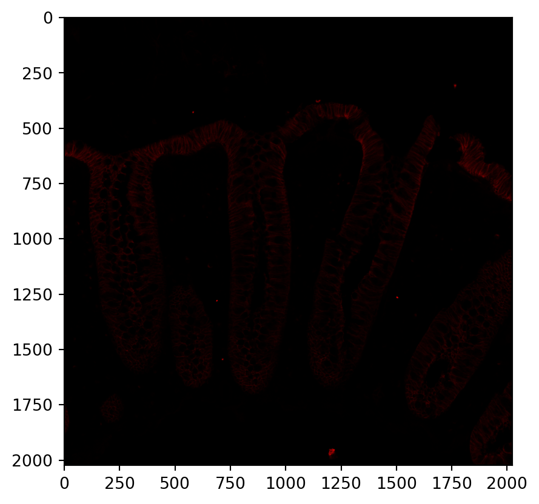
This approach has worked, but the fluorescence signal remains challenging to visualise. This suggests that the pixel intensity values in the image are likely highly skewed, with most pixels occupying a relatively narrow range of intensities and a small number of pixels contributing very high values.
To better understand this distribution, it is useful to first examine the spread of fluorescence intensities across all pixels in the image.
# Create histogram of pixel intensities
histogram, bin_edges = np.histogram(ecad_image, bins=1000)
# Plot histogram
fig, ax = plt.subplots()
ax.plot(bin_edges[:-1], histogram)
ax.set_xlabel("Fluorescence intensity")
ax.set_ylabel("Number of pixels")
ax.set_title("Histogram of pixel intensities")Text(0.5, 1.0, 'Histogram of pixel intensities')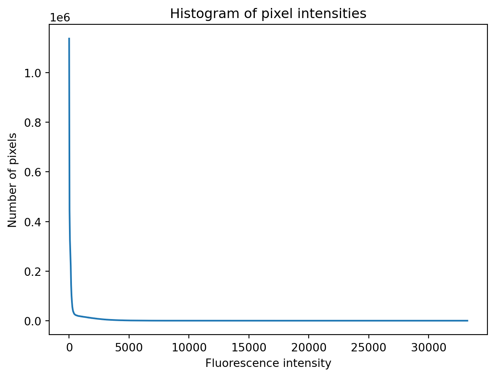
This is very skewed. The challenge here is that we do not want to alter the raw pixel values but we would like to increase the contrast of the image that is being displayed.
To do this, we examine the distribution of pixel intensities and compute the 99th percentile. We then set:
- vmin = 0
- vmax (99th percentile): ignores the brightest 1% of pixels
Now we will only display pixel values between our vmin and vmax and this will focus on the range of (likely) biologically meaningful signal
#Increase the contrast of the image
vmin = 0
vmax = np.percentile(ecad_image, 99)
#Display the image
fig, ax = plt.subplots()
ax.imshow(ecad_image , cmap=black_red, vmin=vmin, vmax=vmax)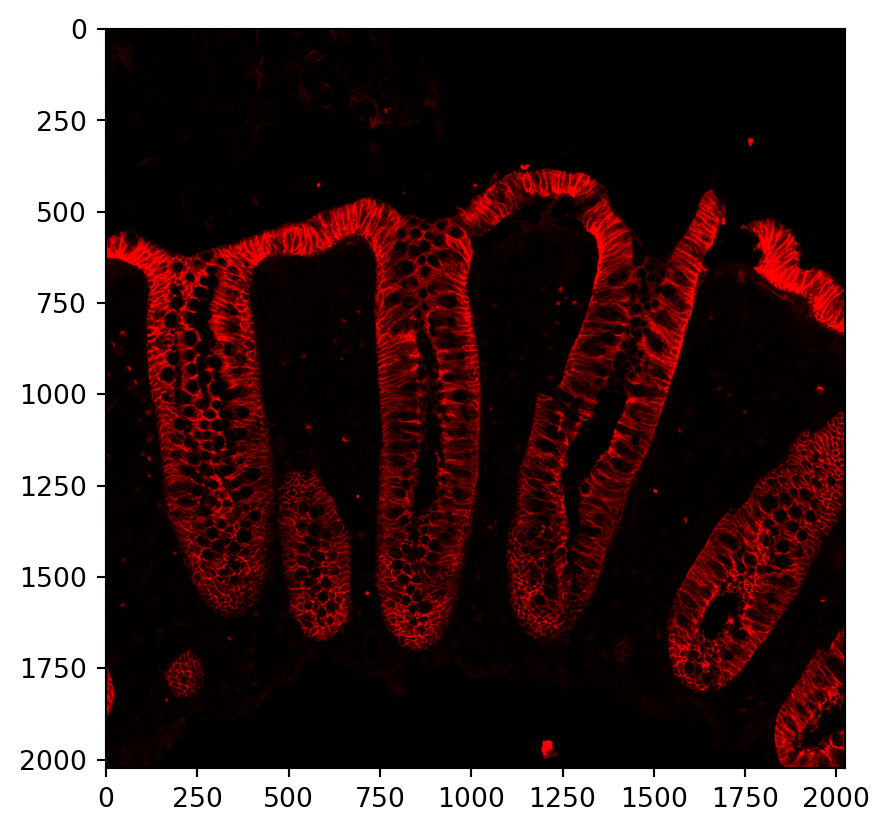
Challenge- can you use what you have learnt so far to change the colour mapping to green?
Displaying Multiplex Biological Images
Having established how to load and display a single-channel image, we can now extend this loading multiplex images which contain additional fluorescent channels.
In addition to the E-cadherin fluorescence channel, we include a channel labelled for β-tubulin III, a neuronal marker, as well as a channel that labels cell nuclei. Displaying these channels together allows us to examine the spatial relationships between different cellular components within the same sample.
# Load the image
multiplex_image = iio.imread(uri="data/colonic_crypt_merge.tif")
#Inspect the shape and structure of the image
print(multiplex_image.shape)
# Show a small sample of pixel values
multiplex_image[:, :3, :3] #this shows all channels with 3 rows and 3 columns of pixels(3, 2024, 2024)array([[[163, 157, 134],
[126, 112, 140],
[182, 153, 172]],
[[ 27, 24, 19],
[ 16, 32, 45],
[ 76, 86, 45]],
[[156, 175, 66],
[193, 113, 183],
[129, 162, 124]]], dtype=uint16)Let’s plot the 3 channels individually.
#Ensure all other instances of images are closed
plt.close('all')
#Determine the number of channels
n_channels = multiplex_image.shape[0]
# Create a 1×n_channels figure with one subplot per channel. figsize scales width per channel (~4 units each), fixed height = 4
fig, axes = plt.subplots(1, #number of rows
n_channels, #number of columns
figsize=(4 * n_channels, 4)) # overall figure size (width, height in inches)
#Loop through the channels
for i, ax in enumerate(axes):
channel = multiplex_image[i]
# Contrast stretch for display
vmin = 0
vmax = np.percentile(channel, 99)
ax.imshow(channel, cmap="gray", vmin=vmin, vmax=vmax)
ax.set_title(f"Channel {i}")
ax.axis("off")
plt.tight_layout()
plt.show()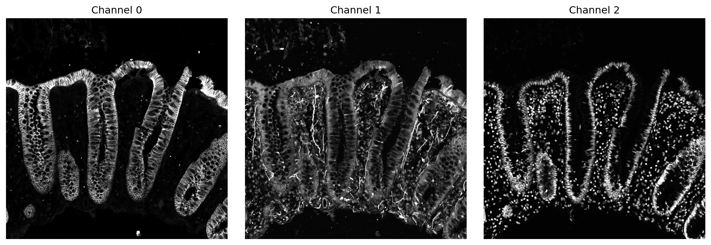
Merge images using python
This process is more advanced, so may feel unfamiliar initially.
We are going to create one merged RGB representative image, suitable for display, but not for analysis as we have to alter pixel values.
#Ensure all other instances of images are closed
plt.close('all')
#Defining colour mapping for channels
channel_colours = [
[1.00, 0.00, 1.00], # magenta – channel 0 / ECAD
[1.00, 1.00, 0.00], # yellow – channel 1 / neurons
[0.00, 0.50, 1.00], # blue – channel 2 / DNA
]
#Extracting image height (h) and width(w)
h, w = multiplex_image.shape[1], multiplex_image.shape[2]
print(f"The height of the image is {h}, the width of the image is {w}")
#Create an empty RGB canvas which is the same size as our image but made of 0's
merged = np.zeros((h, w, 3), dtype=float)
print(f"Creating empty canvas: {merged[:3,:3]}" )
#Loop over each channel, processing one channel at a time
for i in range(n_channels):
#Extracts a channel, converts it to a float (has decimals unlike integers) for mathematical manipulation
ch = multiplex_image[i].astype(float)
# Use the 99th percentile as the upper intensity bound
# This removes extreme bright outliers (e.g., hot pixels) that would otherwise
# compress the visible dynamic range of the image
vmax = np.percentile(ch, 99)
print(f"For Channel{i}, vmax ={vmax}")
# Normalise by vmax then clip so values above vmax are converetd to 1 preventing extreme intensities from dominating the display both within channels and between channels.
ch = np.clip(ch / (vmax), 0, 1)
# Each channel is a 2D grid of brightness values — one number per pixel
# Adding np.newaxis gives it a third dimension so it can hold 3 colour values (R, G, B)
# Multiplying by the channel's colour turns brightness into colour:
# a bright pixel becomes a vivid colour, a dark pixel stays near black
merged += ch[..., np.newaxis] * channel_colours[i]
# Ensure final RGB image is within valid display range
merged = np.clip(merged, 0, 1)
plt.imshow(merged)
plt.axis("off")
plt.title("Merged channels")
plt.show()The height of the image is 2024, the width of the image is 2024
Creating empty canvas: [[[0. 0. 0.]
[0. 0. 0.]
[0. 0. 0.]]
[[0. 0. 0.]
[0. 0. 0.]
[0. 0. 0.]]
[[0. 0. 0.]
[0. 0. 0.]
[0. 0. 0.]]]
For Channel0, vmax =4916.0
For Channel1, vmax =1338.0
For Channel2, vmax =9951.0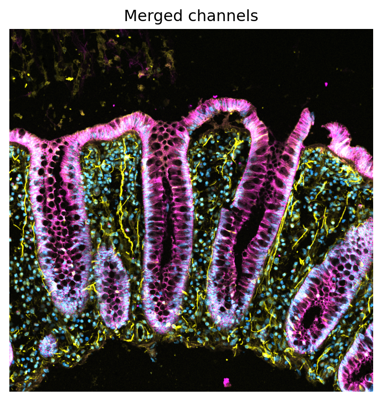
For ease later on, we will condense the two code blocks above into functions
#Create a helper function to plot all channels of a multiplex image side by side
def plot_channels(multiplex_image):
"""Display each channel of a multiplexed image in a row of subplots."""
plt.close('all')
n_channels = multiplex_image.shape[0]
fig, axes = plt.subplots(1, n_channels, figsize=(4 * n_channels, 4))
for i, ax in enumerate(axes):
channel = multiplex_image[i]
vmin = 0
vmax = np.percentile(channel, 99)
ax.imshow(channel, cmap="gray", vmin=vmin, vmax=vmax)
ax.set_title(f"Channel {i}")
ax.axis("off")
plt.tight_layout()
plt.show()
#Create a helper function to plot merge all channels of a multipanel image
def merge_channels(multiplex_image, channel_colours):
"""Merge multiplexed image channels into a single RGB display image."""
plt.close('all')
n_channels = multiplex_image.shape[0]
h, w = multiplex_image.shape[1], multiplex_image.shape[2]
merged = np.zeros((h, w, 3), dtype=float)
for i in range(n_channels):
ch = multiplex_image[i].astype(float)
vmax = np.percentile(ch, 99)
print(f"For Channel{i}, vmax = {vmax}")
ch = np.clip(ch / vmax, 0, 1)
merged += ch[..., None] * channel_colours[i]
merged = np.clip(merged, 0, 1)
plt.imshow(merged)
plt.axis("off")
plt.title("Merged channels")
plt.show()Segmenting images
Segmentation of biological images is a fundamental step in many bio-image analysis workflows. It allows us to identify and isolate specific regions of interest within an image, such as cells, nuclei, or subcellular structures, so that meaningful measurements can be taken. For example, you may want to quantify the size, shape, or intensity of particular features within a sample.
In this experiment, we have performed imaging to quantify the fluorescence intensity of a transcription factor, which has been labelled using a fluorescent antibody. At the same time, the nucleus has been labelled using a DNA-binding dye, providing a clear reference region for segmentation. By separating (segmenting) the nuclei from the background, we can restrict our analysis specifically to nuclear regions.
Once the nuclei have been accurately segmented, we can measure the fluorescence intensity of the transcription factor signal within each nucleus. This enables us to perform a semi-quantitative assessment of how much of the transcription factor is localised to the nucleus under different experimental conditions.
#Import our new data set
# Load the image
miapaca_image = iio.imread(uri="data/miapaca_merge.tif")
#Inspect the shape and structure of the image
print(miapaca_image.shape)
print(miapaca_image[:3,:3,:3])(3, 1860, 1860)
[[[14 28 28]
[14 31 51]
[23 24 28]]
[[35 31 4]
[ 4 0 1]
[20 18 1]]
[[53 49 61]
[55 70 47]
[46 58 47]]]Challenge- plot the channels indivudally
Can you use the plot_channels() function we define earlier to visualise our channels side by side and merged. In this image, channel 0 depicts filamentous actin, labelled with phallodin, channel 1 is our transcription factor labelled with an antibody, and channel 2 is our nuclei labelled with hoechst.
After you have achieved this, lets display the merged image.
#Redefine the colour scheme
immuno_colours = [
[1.00, 0.00, 1.00], # magenta – channel 0 / Actin
[1.00, 1.00, 0.00], # yellow – channel 1 / Transcription Factor
[0.00, 0.50, 1.00], # blue – channel 2 / DNA
]
#Show the merged image
merge_channels(multiplex_image=miapaca_image,
channel_colours=immuno_colours)For Channel0, vmax = 154.0
For Channel1, vmax = 86.0
For Channel2, vmax = 203.0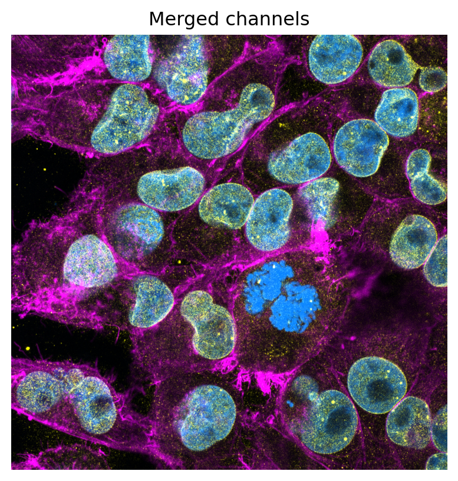
Manual Thresholding
To segment nuclei from the sample, we generate a mask: a Boolean array where pixels with a value of 1 represent nuclei and 0 represent background.
This can be achieved using an intensity threshold, where pixels above a chosen value are classified as nuclear. Choosing an appropriate threshold is important for accurate segmentation.
Before thresholding, it is helpful to apply a Gaussian blur to reduce noise and smooth the image. We can then examine the histogram of pixel intensities for channel 2 to guide selection of the threshold.
#Apply a gaussian blur
blurred_nuclei = ski.filters.gaussian(miapaca_image[2], sigma=1.0)
# Create histogram of pixel intensities
histogram_nuclei, bin_edges_nuclei = np.histogram(blurred_nuclei, bins=256)
# Plot histogram
fig, ax = plt.subplots()
ax.plot(bin_edges_nuclei[:-1], histogram_nuclei)
ax.set_xlabel("Fluorescence intensity")
ax.set_ylabel("Number of pixels")
ax.set_title("Histogram of Hoechst Fluorescence Intensity")Text(0.5, 1.0, 'Histogram of Hoechst Fluorescence Intensity')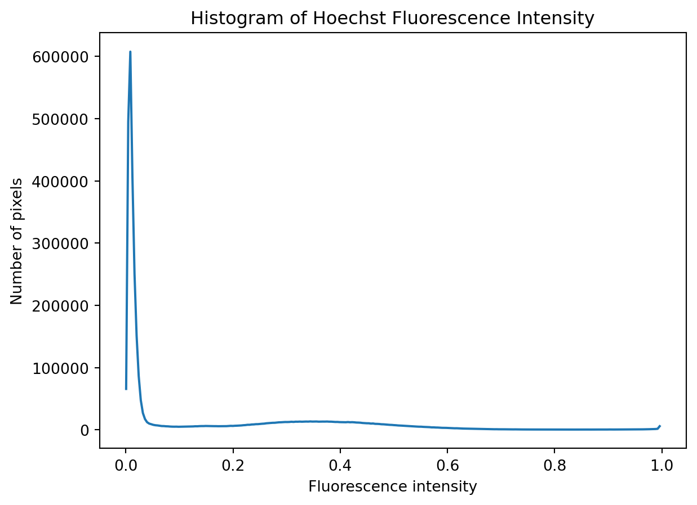
Based on just looking at the histogram, let’s set an arbitary thresholding of 0.15 for masking
manual_threshold= 0.15
# create a binary mask with a manual threshold
binary_mask_manual = blurred_nuclei > manual_threshold
print(binary_mask_manual[:3,:3])
fig, ax = plt.subplots()
ax.imshow(binary_mask_manual, cmap="gray")[[ True True True]
[ True True True]
[ True True True]]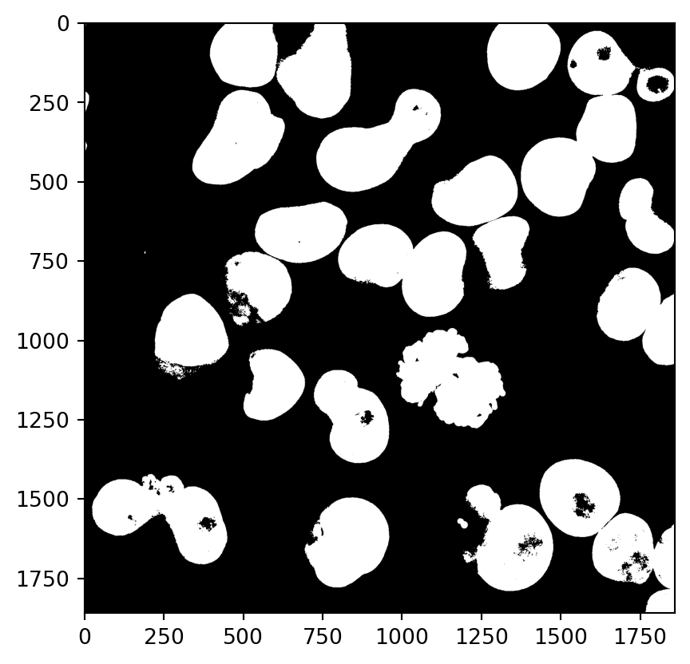
Otsu Thresholding
This has done quite a good job. However, manually deciding on thresholds can be tedious and subject to bias. There are algorithms which automate this selection process such as otsu thresholding.
otsu_threshold= ski.filters.threshold_otsu(blurred_nuclei)
print(f"The Otsu Threshold is..{otsu_threshold}")
# create a binary mask with the threshold found by Otsu's method
binary_mask_otsu = blurred_nuclei > otsu_threshold
fig, ax = plt.subplots()
ax.imshow(binary_mask_otsu , cmap="gray")The Otsu Threshold is..0.221037922672038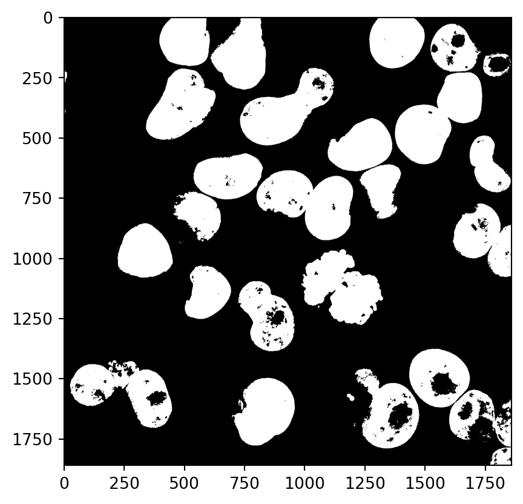
Hoechst labelling often results in regions of low fluorescence intensity within the nucleus. This is because structures such as the nucleoli are poorly labelled, as Hoechst binds to the minor groove of DNA.
As a result, segmented nuclei may contain internal “holes.” To obtain accurate masks, it is often necessary to fill these regions. Fortunately, functions are available to perform this hole-filling step automatically.
# Fill holes in the mask
binary_mask_otsu = ski.morphology.remove_small_holes(binary_mask_otsu, max_size=10000)
fig, ax = plt.subplots()
ax.imshow(binary_mask_otsu , cmap="gray")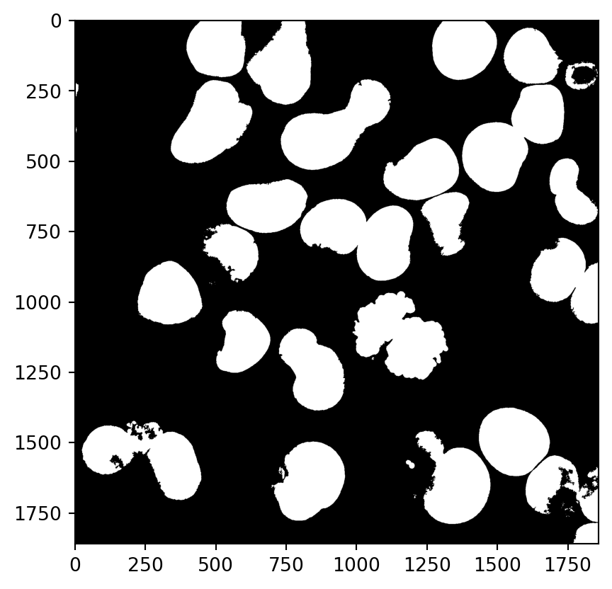
This looks good, it is possible we have very small masks which are not full nuclei but small regions of pixels above our automatic threshold. Let’s add a size exlcusion to our mask
# Remove small objects below a minimum size threshold
binary_mask_otsu = ski.morphology.remove_small_objects(binary_mask_otsu, max_size=1000)Now let’s extract some biological information, for example what is the fluorescence intensity of our transcription factor (channel 1) inside our nuclei
# Label each connected region in the mask (each nucleus gets a unique integer)
labelled_mask = ski.measure.label(binary_mask_otsu)
# Extract the channel
ch = miapaca_image[1].astype(float)
# Measure properties for each labelled region
props = ski.measure.regionprops_table(
labelled_mask,
intensity_image=ch,
properties=["label", "area", "mean_intensity"]
)
# Convert to a dataframe
df_fi = pd.DataFrame(props)
print(f"Measured {len(df_fi)} nuclei")
print(df_fi.head())Measured 25 nuclei
label area mean_intensity
0 1 36045.0 27.656596
1 2 46955.0 31.594974
2 3 40013.0 24.344563
3 4 29635.0 26.406276
4 5 3954.0 28.868488Next steps in this analysis could include the usage of a watershed algorithm. This can be utilised to help distinguish between touching nuclei: Watershed example (scikit-image)
Conclusion
Through this workshop we have transitioned from working with individual 8 bit pixel like variables, to handling complex multiplexed fluorescent images. We have explored how we can use python to display biological images, segment them, and extract biologically relevant information.